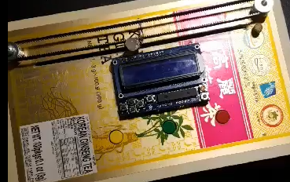

Eye Squared See
September 2019 - December 2019
Technologies: Arduino
Repository: https://github.com/mxmsunny/eye_squared_see
Eye Squared See is an Arduino project that aims to test and improve hand-eye coordination by having players simultaneously focus their eyes and hands on a moving LED and colored buttons. In other words, it is a reaction game with two game modes that requires the player to use both their eyes and fingers to play.
Eye Squared See was a project submitted for Professor Eric Schweitzer's Microprocessors and Embedded Systems class.
Details on the Project
There are two game modes. Although the two game modes are similar, they each serve different purposes.
After receiving power, the LCD will display the welcome screen, which asks the player to choose a game mode using the buttons on the LCD shield. In both of the game modes, the RGB LED will randomly shine three different colors: red, green, or yellow. The RBG LED will also be moving back and forth with the assistance of the stepper motor and timing belt. The player would have to press the same colored button as the current color of the RBG LED. The rate that the color changes on the RBG LED is dependent on the steps of the stepper motor. When the stepper motor changes direction, the LCD will update the time, lives, and scores and display them to the player.
In the first game mode, also known as Game Mode 1, the player is given 3 lives to reach a score of 60. If the player does not press a button, or pushes the wrong button, a life is taken away. However, there might be instances where a button is pressed but the input is not read. Thus, I decided to add a life whenever the player reaches a score that is a multiple of 10, up to 50. The speed that the LED changes color will get faster when the player reaches a score of 10 and 40.
In the second game mode, the player is given 60 seconds to get as many points as possible. The rate the color changes is set to the “highest” setting, which is equivalent to the last level of the first game mode (which is when the player reaches a score of 40).
What I've learned
From this project, I've learned how to build projects using microprocessors, learned how to safely solder, and learned how to determine how much power a project draws. I was inspired to learn more about microprocessors by my friend and fellow Chinese Flagship colleague, Belinda Liang. After seeing her and her classmates' projects at their showcases, it piqued my interest, and I figured that it would be fun and educational to work with microprocessors and embedded systems.